Files & Folders
Navigating the Windows and Mac filesystems
How do computers store information?
Computers only think in terms of 1s and 0s (binary). Every bit of information on your computer is coded in binary and the your computer will translate one set of of 1s and 0s to another when displaying information on your screen.
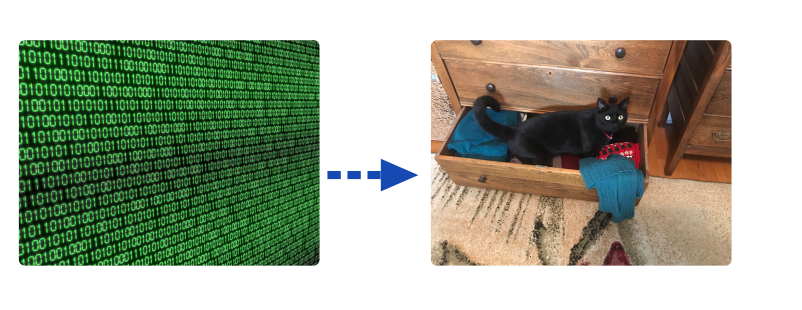
What is a file?
On a computer, you probably have pictures, word documents, saved video games, applications, code, plus a whole lot more. It would be very difficult if every time you opened Word, every document that you ever wrote was all smushed together.
So, to make your life easier, your computer organizes data into discrete elements, called files. Each file has the data for one thing only, for example, one picture, one Word Document, one application, etc.
In the old days, files used to be a document that was printed on paper. Today, most people refer to files as a document of some kind (picture, code, Word, etc) that is stored on your computer.
How are the files organized?
The old days
Before computers were everywhere, most people and companies organized their files into folders.
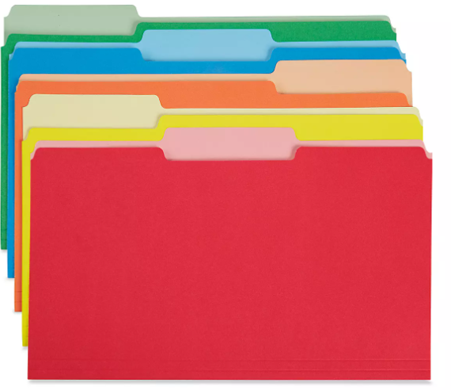
Each folder would have a name, describing what types of files it contained (example: ‘Project 1’, ‘Project 2’)
Maybe, if the number of files were large, the owner of a company might reorganize their files, so that the folder ‘Project 1’ might be contain more folders (example: ‘customer complains’, ‘expenses’, etc.)
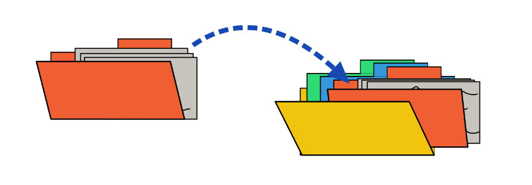
Computer Filesystems
To make the transition from storing files on paper, in paper folders, in filing cabinets, to storing files on computers easier, the powers that be decided to use the same names, i.e. files and folders.
NOTE: before computers were used everywhere, folders used to be called directories and the words mean EXACTLY the same thing, so if your teacher forgets, and says directory, remember that she actually means folder.
So, in a folder you can have files and other folders.
Since folders are not longer physical things, we need a way to envision them.
In short, folders (or directories) are organized into a tree format.
My Documents
| --- English
| |-> Assignment 1.docx
| |-> Assignment 2.docx
| --- Programming
| | --- Assignment 1
| | |-> Instructions.pdf
| | |-> code.py
| | |-> output.txt
| | |--- Assignment 2
| | | | -> Instructions.pdf
| | | | -> code.py
| | | | -> output.csvWindows File Explorer
Welcome to File Explorer
An excellent tutorial on using files on a Windows platform can be found here.
ALWAYS VIEW YOUR FILES IN FILE EXPLORER IN DETAIL MODE TO SEE ALL THE PERTINENT INFORMATION.
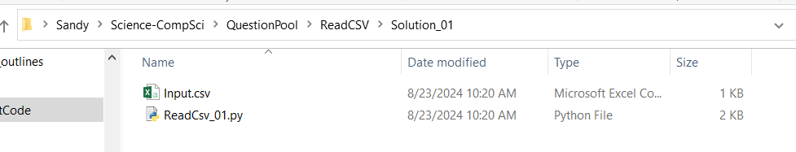
{width=100%}In the image above the top line indicates all of the folders relative to each other:
Sandy > Science-CompSci > QuestionPool > ReadCSV > Solution_01`means that the folder Sandy contains the folder Science-CompSci which contains …
Sandy
| --- Science-CompSci
| --- QuestionPool
| --- ReadCSV
| --- Solution_01And the list of files in the main window are the files that are contained in the folder Solution_01
Mac Finder

Unless you have really messed up your MAC, the file explorer (“Finder”) icon is located at the bottom left of you Mac desktop.
To see all of your files, with extensions, choose list or columns
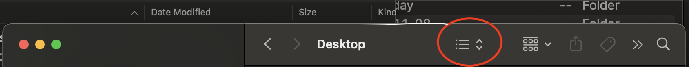
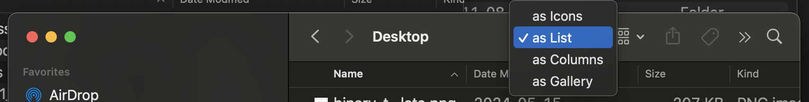
Sometimes (depending on the size of the “finder” window), you may see: Choose one or the other.
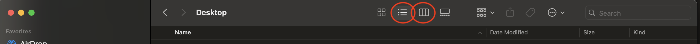
List view
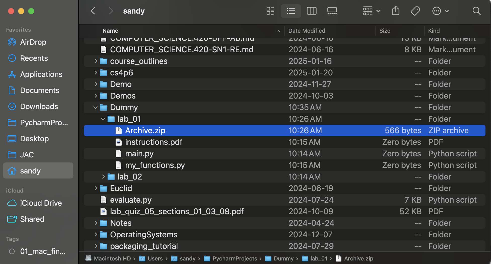
In the image above the bottom line indicates all of the folders and files of the file that is selected:
Macintosh HD/Users/sandy/PyCharmProjects/Dummy/lab_01/Archive.zip
What is a File Extension?
The file extension is defined as the last bit of a file name that follows the last dot (.) Kinda of like a last name.
Example: code.py has a file extension .py. A word document typically has the extension .docx, so the filename is typically assignment 1.docx.
Why don’t I see them in File Explorer?
The developers at Microsoft have designed File Explorer to be easy(?) for non-programmers to use, and so by default they hide the file extension.
But, you are now a programmer, and you absolutely need to know what the file extensions are…
Please follow the instructions in: MS Windows Support - Show file extensions
Why do we use File Extensions?
The file extensions give a hint to the operating system (Windows/Linux/Mac) as to what type of data is in the file. So if the extension is .png then the operating system knows that it is a picture, and if you double click the filename in File Explorer, it will call the appropriate program that can show you the picture.
Likewise if the file extension is .docx, double clicking the file in File Explorer will open Microsoft Office which in turn will read the file and display it to you.
Important File Extensions in this course:
| Extension | Icon | Meaning |
|---|---|---|
| Folders have no extension | ||
.docx |
Word Document | |
.py |
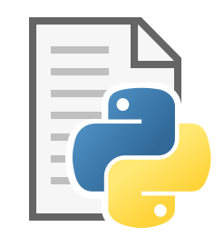 |
Python Code |
.pdf |
Portable Document File (PDF) document. Any printer can print this file without having any specialized software. | |
.csv |
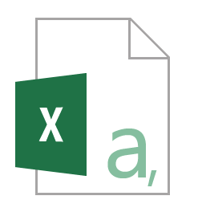 |
Comma Separated Values (can be read as a text file, or opened with Excel, where Excel will put data into the various columns, where each column data is separated by a comma) |
.zip |
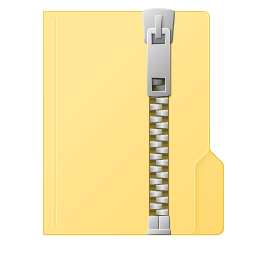 |
Zip file. Contains multiple files within one file. It needs to be unzipped before you can use the files within. WARNING: In File Explorer it can look like it is not zipped, even though it is. |
Working with .zip files
.zip files allow use to store a group of files in one place, while also “compressing” them into a smaller size than the sum of all individual files.
There are two important things to know about .zip files: - They can be created by compressing a collection of files - You can access the files inside them by extracting the .zip
You can think of a .zip file like a suitcase with your clothing stuffed inside, where a folder is like a closet with your clothing hung up: - the .zip is like a “suitcase” in that it’s easy to transport all of your clothing at once, but you can’t access the “clothing” (files) without “opening” (extracting) the suitcase. - the folder is like a “closet” in that it’s hard to transport the whole thing at once, but makes accessing each individual file (article of clothing) much easier.
To understand how to use the .zip files in this course: please open and read this short explainer.
Advice: keep this document open while you are working, as it contains all of the information you need to use .zip files correctly
More step-by-step instructions for working with .zip follow below:
Compressing / Uncompressing files (zip/unzip)
There are multiple ways to create a single file from a set of other files (LEA only accepts one document). We will only be discussing one method in this document.
Windows
Open file explorer.
To zip,
- select the files that you want to zip together, and right-click. Select
send tothencompressed folder
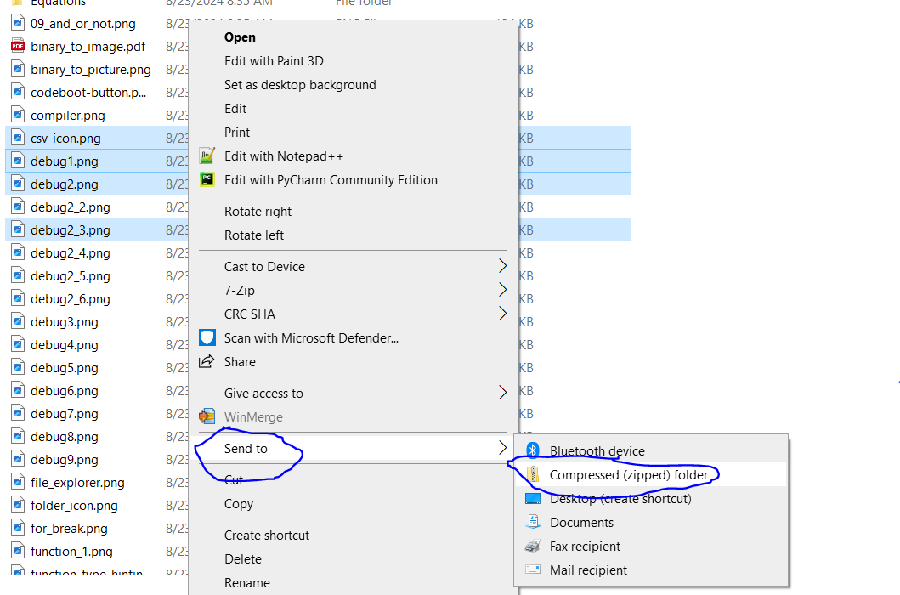
To unzip
- Select the file you want to unzip
- Click the
Extracttab at the top of the screen - Click
Extract Allbutton on the right, and follow instructions
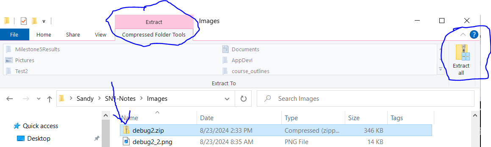
If you have double-clicked on a zip file, it will open a new window showing all the files within the zip file. This can be misleading because it looks just the same as if the files have been unzipped.
Do not work with these files directly, because weird stuff can happen (not always, so it makes it even more confusing)
What to look out for: - if the folder information ends with a zip file.
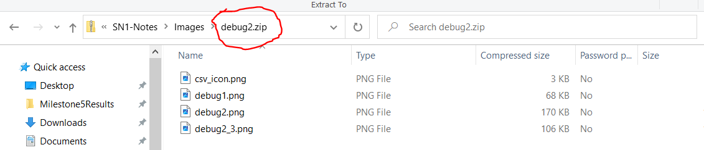
2DO NOT EVER DOUBLE CLICK A .py FILE FROM WITHIN A ZIP FILE. YOUR CHANGES WILL NOT BE SAVED!!
MAC/Linux
| Name | Symbol |
|---|---|
| Command |  |
| Fn (Function) |  |
| World |  |
| Option |  |
| Shift |  |
Select the files that you want to zip
command-clickfor inclusive selectioncommand-shift-clickfor selecting one file at a time
Right click your selection
Select compress
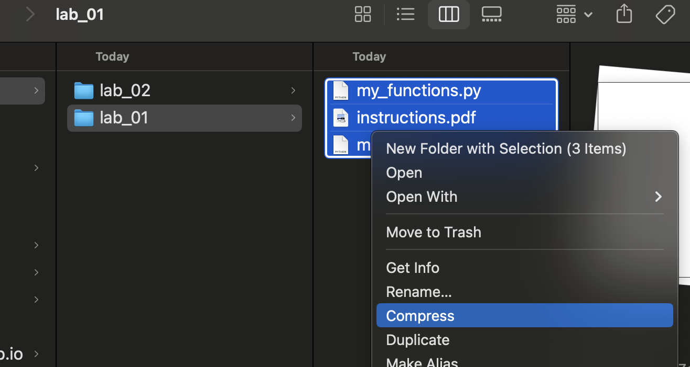
This will create a file called “Archive.zip”
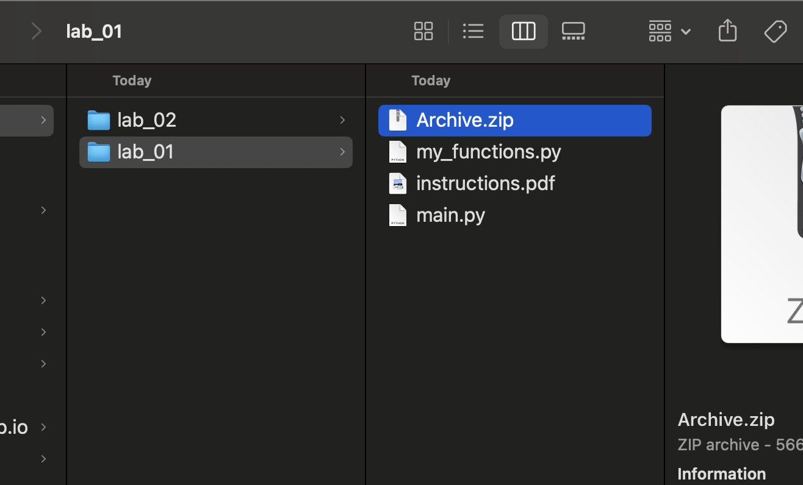
- You can submit this “Archive.zip file ‘as-is’ to LEA.
ADVANCED: command line
open up the terminal window
to create a zip file type
zip -f somefilename.zip file1.txt, file2.csv ...where you replace the filenames with the appropriate names of the filesto unzip a zip file
unzip somefilename.zipwhere you replace the filenames with the appropriate names of the files